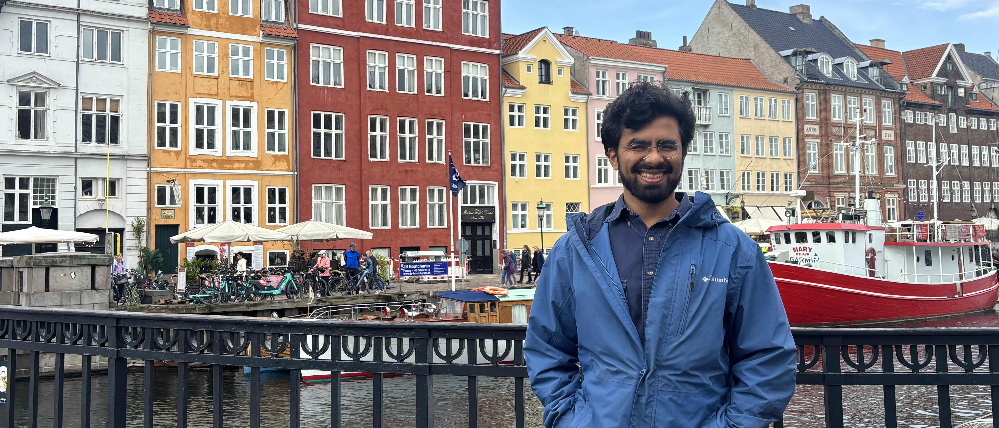

About
I am a computational social scientist and a Ph.D. candidate at the Vermont Complex Systems Institute. My research broadly focuses on statistical methods applied to natural language. I am particularly interested in the intersection of natural language processing, computational ethics, and machine learning.